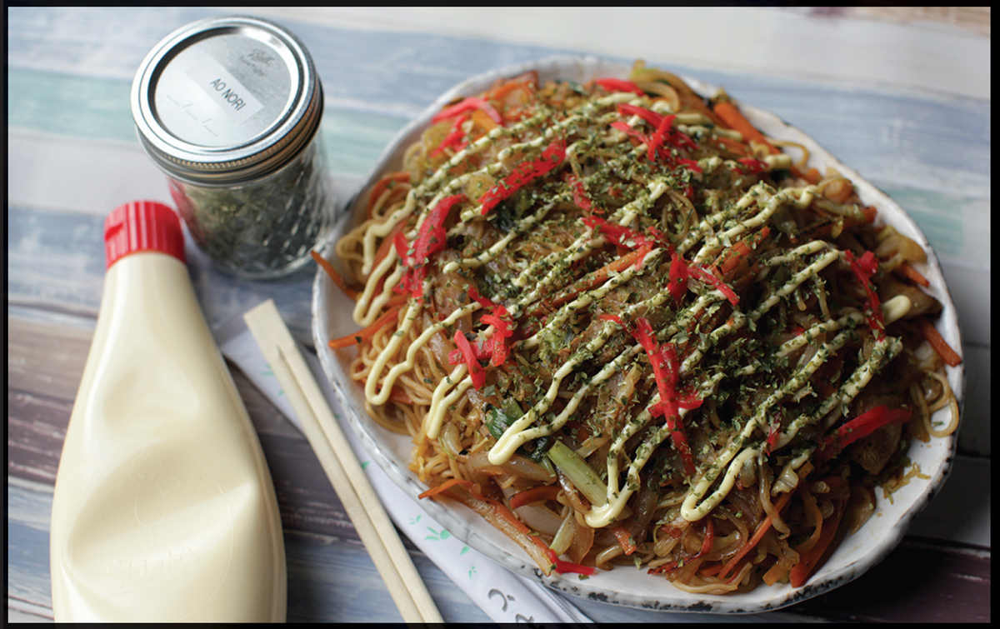

YAKISOBA (JAPANESE FRIED NOODLES)
|
Yield Serves 3 to 4 |
Active Time 15 minutes Total Time 30 minutes |
You can typically find noodles intended for yakisoba in Japanese grocery stores, often with powdered packets of sauce included (I don’t use the powdered sauce—I prefer to mix my own), and with most brands, you don’t need to par-cook them at all, just run some hot water over them in the sink to loosen them up. If you can’t find noodles specifically sold for yakisoba, fresh ramen or Chinese alkaline wheat noodles will work just fine. Par-boil the noodles until just shy of al dente in boiling water, drain them, toss with a little oil, and proceed as directed in the recipe.
Ao-nori, beni-shoga, and Kewpie mayonnaise can be found at any Japanese supermarket or ordered online. Ao-nori comes in little sealed pouches and should be in the dried seaweed or condiments section. Beni-shoga is sold in jars in the refrigerated section next to the gari (sushi ginger). Kewpie is a Japanese brand of mayonnaise that has a distinct umami kick from added MSG.
Japanese food has a bit of a split personality. On the one hand, much of the most celebrated, fanciest food—the kaiseki cuisine of Kyoto or the high-end sushi of Tokyo—is marked by its subtlety and its devotion to clean, simple flavors. But there’s another side to Japanese food, a side that more resembles Homer Simpson’s makeup shotgun, in which ingredients are doused in heavy sweet-and-savory sauces and a slew of condiments. If you’ve seen those viral videos of the Japanese chef making omurice—chicken-fried rice topped with an omelet with a liquid egg center and a huge ladle of ketchup-flavored demi-glace sauce—you’ve seen that side of Japanese food.
Yakisoba falls squarely into that side, and given its nearly hundred-year-old history in Japan, it may well be one of the progenitors of it. Yakisoba literally translates as “fried” (yaki) “noodles” (soba). While you may be familiar with the term soba in reference specifically to Japanese buckwheat noodles served in soup (a subtle dish), yakisoba are typically made with dense, Chinese-style wheat chukasoba, otherwise known as “ramen.” It’s a common street snack served at festivals, sporting events, and grade-school field days. It’s typically cooked in vast quantities on a wide steel flattop called a teppan—the kind of flattop we’d cook burgers on in the United States. Yakisoba cooks will stir-fry cabbage, carrots, and onions, along with strips of fatty pork belly before dumping on a vast amount of par-boiled noodles, tossing everything together with a pair of short, stubby spatulas that look like mortaring trowels.
Anybody who’s lived in Japan will recognize the clang as the trowels move back and forth, tossing the noodles, pork, and vegetables together. The dish gets finished with a sweet and savory thickened Worcestershire-style sauce, plated up, then topped with ao-nori (dried green seaweed) and beni-shoga (bright red pickled ginger). Frequently you’ll also get a drizzle of Japanese-style Kewpie mayonnaise on top.*
INGREDIENTS
For the Sauce:
2 tablespoons (30 ml) Worcestershire sauce, preferably Japanese Bulldog brand “thicker Worcestershire sauce”
2 tablespoons (30 ml) ketchup
1 tablespoon (15 ml) oyster sauce
1 tablespoon (15 ml) shoyu or light soy sauce
1 tablespoon (12 g) sugar or honey
For the Stir-Fry:
1 tablespoon (15 ml) peanut, rice bran, or other neutral oil
4 ounces (120 g) fresh pork belly or bacon, rind removed, thinly sliced, and cut into 1-inch squares
½ white or yellow onion (about 3 ounces/90 g), thinly sliced
½ medium carrot (about 3 ounces/ 90 g), cut into 2- to 3-inch matchsticks
½ small head green cabbage (about 6 ounces/170 g), thinly shredded
3 scallions, cut into 1½-inch pieces
1 pound (450 g) yakisoba noodles, rinsed under hot water to loosen them
Kosher salt and freshly ground black pepper
To Garnish:
Ao-nori, beni-shoga, and Kewpie mayonnaise (all optional; see Notes)
DIRECTIONS
1 For the Sauce: Combine the Worcestershire sauce, ketchup, oyster sauce, soy sauce, and sugar or honey in a small bowl and stir together until the sugar is dissolved. Set aside.
2 For the Stir-Fry: Heat the oil in a wok over medium-high heat until shimmering. Add the pork and cook, stirring and tossing, until it has rendered its fat and is starting to turn brown and crisp in spots, about 3 minutes.
3 Increase the heat to high, then add the onion, carrot, and cabbage and stir-fry until the vegetables are tender and starting to brown slightly, about 2 minutes. Add the scallions, toss to combine, then transfer everything to a bowl and set aside, leaving some of the oil and pork fat in the wok.
4 Reheat the wok over high heat until lightly smoking, add the noodles, and cook, tossing and stirring, until hot, about 1 minute. Return the vegetables and pork to the wok and toss everything to combine. Stir the sauce and add to the wok. Cook, tossing, until the sauce coats everything thoroughly. Season to taste with salt and black pepper. Transfer to a serving platter, sprinkle with ao-nori and beni-shoga, drizzle with Kewpie mayo (if desired), and serve.

*The same condiments (or a subset thereof) show up on several classic Japanese street foods, such as okonomiyaki (Japanese egg and cabbage pancakes) and takoyaki (little spherical octopus pancakes).